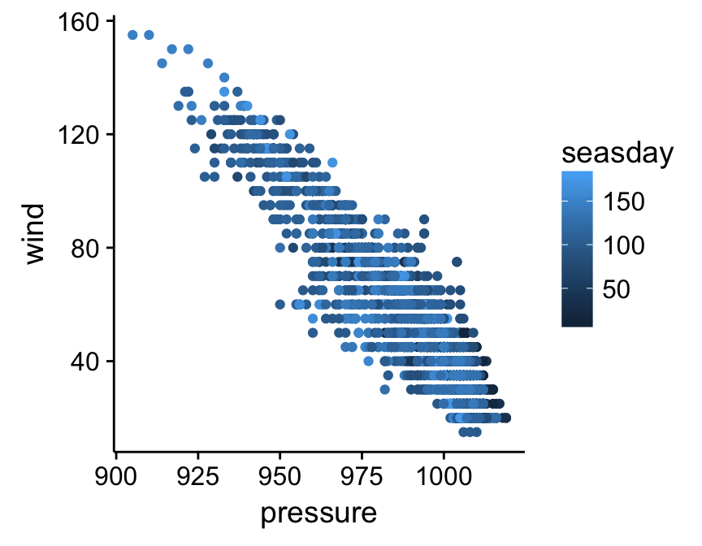
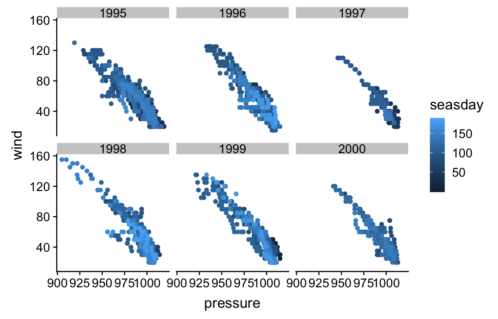

Chapter 18 Introduction to ggplot2
One of the main reasons data analysts turn to R is for its strong data visualisation capabilities. The R ecosystem includes many different packages that support data visualisation. The three that are used widely used are: 1) the base graphics system, which uses the graphics package; 2) the lattice package; and 3) the ggplot2 package. Each of these has its own strengths and weaknesses:
Base graphics is part of base R—it’s available immediately after we start R. It’s very flexible and allows us to construct more or less any plot we like. This flexibility comes at a cost though. It’s quite easy to get up and running with the base R graphics—there are functions like
plotandhistfor making commonly-used figures—but building complex figures is time consuming. We have to write a lot of R code to prepare even moderately complex plots, there are a huge number of graphical parameters to learn, and many of the standard plotting functions are inconsistent in the way they work.The lattice package was developed by Deepayan Sarkar to implement ideas of Bill Cleveland in his 1993 book, Visualizing Data. The package implements something called Trellis graphics, a very useful approach for graphical exploratory data analysis. Trellis graphics are designed to help us visualise complicated, multiple variable relationships. The lattice package has many “high level” functions (e.g.
xyplot) to make this process easy, but still retains much of the fine-grained control that characterises the standard graphics system. The lattice package is very powerful but can be hard to learn.The ggplot2 package was developed by Hadley Wickham to implement some of the ideas in a book called The Grammar of Graphics by Wilkinson (2005). It produces Trellis-like graphics, but is quite different from lattice in the way it goes about this. It uses its own mini-language to define graphical objects, adopting the language of Wilkinson’s book to define these. It takes a little while to learn the basics, but once these have been mastered these it’s very easy to produce sophisticated plots with very little R code. The downside of working with ggplot2 is that it isn’t as flexible as base graphics.
We aren’t going to survey all three of these plotting systems. There isn’t space, and in any case, it’s possible to meet most data visualisation needs by becoming proficient with just one of them. This book focuses on ggplot2. In many ways the ggplot2 package hits the ‘sweet spot’ between standard graphics and lattice. It allows us to produce complex visualisations without the need to write lines and lines of R code, but is still flexible enough to allow us to tweak the appearance of a figure so that it meets our specific needs.
18.1 The anatomy of ggplot2
The easiest way to learn ggplot2 is by seeing it in action. Before we dive in it’s worth surveying the essential features of the ggplot2 ‘grammar’. Most of this is fairly abstract and won’t make sense on first reading. This is fine. Abstract ideas like ‘aesthetics’ and ‘geoms’ will start to make sense as we work through a range of different examples in the next few chapters.
ggplot2 is designed to reflect Wilkinson’s grammar of graphics. The ggplot2 version of this grammar revolves around the idea of layers. The underlying idea is that we construct a visualisation in a structured manner by defining one or more of these layers, which together with a few other components define a complete ggplot2 object. Each layer may have its own data or it may share its data with another layer, and each layer displays its data in a specific way. The resulting ggplot2 object is defined by a combination of:
a default data set along with a set of mappings from variables to aesthetics,
one or more layers, each comprising a number of components,
one scale for each aesthetic mapping,
a coordinate system for the plot,
a faceting specification that tells ggplot2 how to define a multi-panel plot.
We’ll skim over each of these in turn before moving onto the business of actually using ggplot2.
18.1.1 Layers
Each layer in a ggplot2 plot may have five different components, though we don’t necessarily have to specify all of these:
The data. At a minimum, every plot needs some data. Unlike base R graphics, ggplot2 always accepts data in one format, an R data frame (or tibble). Each layer can be associated with it’s own data set. However, we don’t have explicitly add data to each layer. When we choose not to specify the data set for a layer ggplot2 will try use the default data if it has been defined.
A set of aesthetic mappings. These describe how variables in the data are associated with the aesthetic properties of the layer. Commonly encountered aesthetic properties include position (x and y locations), colour, and size of the objects on a plot. Each layer can be associated with it’s own unique aesthetic mappings. When we choose not to specify these for a layer ggplot2 will use the defaults if they were defined.
A geometric object, called a ‘geom’. The geom tells ggplot2 how to actually represent the layer—they refer to the objects we can actually see on a plot, such as points, lines or bars. Each geom only works with a particular of aesthetic mappings. We always have to define at least one geom when using ggplot2.
A stat. These take the raw data in the data frame and transform in some useful way. A stat allows us to produce summaries of our raw data. We won’t use them in this book because we can produce the same kinds of figures by first processing our data with dplyr. Nonetheless, the stat facility is one of the things that makes ggplot2 particularly useful for exploratory data analysis.
A position adjustment. These apply small tweaks to the position of layer elements. These are most often used in plots like bar plots where we need to define how the bars are plotted, but they can occasionally be useful in other kinds of plots.
18.1.2 Scales
The scale part of a ggplot2 object controls how the data is mapped to the aesthetic attributes. A scale takes the data and converts it into something we can perceive, such as an x/y location, or the colour and size of points in a plot. A scale must be defined for every aesthetic in a plot. It doesn’t make sense to define an aesthetic mapping without a scale because there is no way for ggplot2 to know how to go from the data to the aesthetics without one.
Scales operate in the same way on the data in a plot. If we include several layers they all have to use the same scale for the shared aesthetic mappings. This behaviour is sensible because it ensures that the information that is displayed is consistent.
If we choose not to explicitly define a scale for an aesthetic ggplot2 will use a default. Very often this will be a ‘sensible’ choice, which means we can get quite a long way with ggplot2 without ever really understanding scales. We won’t worry too much about them, though we will take a brief look at a few of the more common options.
18.1.3 Coordinate system
A ggplot2 coordinate system takes the position of objects (e.g. points and lines) and maps them onto the 2d plane that a plot lives on. Most people are already very familiar with the most common coordinate system (even if they didn’t realise it). The Cartesian coordinate system is the one we’ve all been using ever since we first constructed a graph with paper and pencil at school. All the most common statistical plots use this coordinate system so we won’t consider any others in this book.
18.1.4 Faceting
The idea behind faceting is very simple. Faceting allows us to break a data set up into subsets according to the unique values of one or two variables, and then produce a separate plot for each subset. The result is a multipanel plot, where each panel shares the same layers, scales, etc. The data is the only thing that varies from panel to panel. The result is a kind of ‘Trellis plot’, similar to those produced by the lattice package. Faceting is a very powerful tool that allows us to slice up our data in different ways and really understand the relationship between different variables. Together with aesthetic mappings, faceting allows us to summarise relationships among 4-6 variables in a single plot.
18.2 A quick introduction to ggplot2
Now that we’ve briefly reviewed the ggplot2 grammar we can start learning how to use it. The package uses this grammar to define a sort of mini-language within R, using functions to specify components like aesthetics and geoms, which are combined with data to define a ggplot2 graphics object. Once we’ve constructed a suitable object we can use it to display our graphic on the computer screen or save in a particular graphics format (e.g. PDF, PNG, JPEG, and so on).
Rather than orientating this introduction around each of the key functions we’re going to develop a simple example to help us see how ggplot2 works. Many of the key ideas about how ggplot2 works can be taken away from this one example, so it’s definitely worth investing the time to understand it, i.e. use the example understand how the different ggplot2 functions are related to the grammar outlined above.
Our goal is to produce a scatter plot. The scatter plot is one of the most commonly used visualisation tools in the EDA toolbox. It’s designed to show how one numeric variable is related to another. A scatter plot uses horizontal and vertical axes (the ‘x’ and ‘y’ axes) to visualise pairs of related observations as a series of points in two dimensions.
We’ll use the storms data from the nasaweather package to construct the scatter plot. The questions we want to explore are: 1) what is the relationship between wind speed (wind) and atmospheric pressure (pressure); 2) and how does this vary among (year) and within (seasday) years? That is, we want to investigate how wind speed depends on atmospheric pressure, and how this relationship varies over time.
18.2.1 Making a start
To begin working with a graphical object we have to first set up a basic skeleton to build on. This is the job of the ggplot function. We can build an empty object by using ggplot without any arguments:
plt <- ggplot()
summary(plt)## data: [x]
## faceting: <ggproto object: Class FacetNull, Facet>
## compute_layout: function
## draw_back: function
## draw_front: function
## draw_labels: function
## draw_panels: function
## finish_data: function
## init_scales: function
## map: function
## map_data: function
## params: list
## render_back: function
## render_front: function
## render_panels: function
## setup_data: function
## setup_params: function
## shrink: TRUE
## train: function
## train_positions: function
## train_scales: function
## vars: function
## super: <ggproto object: Class FacetNull, Facet>Here’s what just happened: we constructed the skeleton object, assigned it to a variable called plt, and then used the summary function to inspect the result. When first learning about ggplot2, it’s a good idea to use summary on various objects to get an idea of their structure. It’s quite ‘verbose’, but the important parts of the output are near the top, before the faceting: part. In this case, the ‘important part’ is basically empty. This tells us that there are no data, aesthetic mapping, layers, etc associated with plt. All we did was set up an empty object.
ggplot2 vs. ggplot
Notice that the while package is called ggplot2, the actual function that does the work of setting up the skeleton graphical object is called ggplot. Try not to mix them up—this is a common source of errors.
How can we improve on this? We should add a default data set, which we do by passing the name of a data frame or dplyr tibble to ggplot. Let’s try this with storms:
plt <- ggplot(storms)
summary(plt)## data: name, year, month, day, hour, lat, long, pressure, wind,
## type, seasday [2747x11]
## faceting: <ggproto object: Class FacetNull, Facet>
## compute_layout: function
## draw_back: function
## draw_front: function
## draw_labels: function
## draw_panels: function
## finish_data: function
## init_scales: function
## map: function
## map_data: function
## params: list
## render_back: function
## render_front: function
## render_panels: function
## setup_data: function
## setup_params: function
## shrink: TRUE
## train: function
## train_positions: function
## train_scales: function
## vars: function
## super: <ggproto object: Class FacetNull, Facet>Notice that when we summarise the resulting object this time we see that the variables inside storms (name, year, month, etc) now comprise the data inside our plt object.
The next step is to add a default aesthetic mapping to our graphical object. Remember, these describe how variables in the data are mapped to the aesthetic properties of the layer(s). One way to think about aesthetic mappings is that they define what kind of relationships our plot will describe. Since we’re making a scatter plot we need to define mappings for positions on the ‘x’ and ‘y’ axes. We want to investigate how wind speed depends on atmospheric pressure, so we need to associate wind with the y axis and pressure with the x axis.
We define an aesthetic mapping with the aes function (‘aesthetic mapping’). One way to do this is like this:
plt <- plt + aes(x = pressure, y = wind)This little snippet of R code may look quite strange at first glance. There are a couple things to take away from this:
- We ‘add’ the aesthetic mapping to the
pltobject using the+operator. This has nothing to do with arithmetic. The ggplot2 package uses some clever programming tricks to redefine the way+works with its objects so that it can be used to combine them. This is nice because it makes building up a plot from the components of the grammar very natural. - The second thing to notice is that an aesthetic mapping is defined by one or more name-value pairs, specified as arguments of
aes. The names on the left hand side of each=refer to the properties of our graphical object (e.g. the ‘x’ and ‘y’ positions). The values on right hand side refer to variable names in the data set that we want to associate with these properties.
Notice that we overwrote the original plt object with the updated version using the assignment operator. We could have created a distinct object, but there’s usually no advantage to do this. Once again, we should inspect the result using summary:
summary(plt)## data: name, year, month, day, hour, lat, long, pressure, wind,
## type, seasday [2747x11]
## mapping: x = pressure, y = wind
## faceting: <ggproto object: Class FacetNull, Facet>
## compute_layout: function
## draw_back: function
## draw_front: function
## draw_labels: function
## draw_panels: function
## finish_data: function
## init_scales: function
## map: function
## map_data: function
## params: list
## render_back: function
## render_front: function
## render_panels: function
## setup_data: function
## setup_params: function
## shrink: TRUE
## train: function
## train_positions: function
## train_scales: function
## vars: function
## super: <ggproto object: Class FacetNull, Facet>As hoped, the data (data:) from the original plt are still there, but now we can also see that two default mappings (mapping:) have been defined for the x and y axis positions. We have successfully used the ggplot and aes functions to set up a graphical object with both default data and aesthetic mappings. Any layers that we now add will use these unless we choose to override them by specifying different options.
In order to produce a plotable version of plt we now need to specify a layer. This will tell ggplot2 how to visualise the data. Remember, each layer has five different components: data, aesthetic mappings, a geom, a stat and a position adjustment. Since we’ve already set up the default data and aesthetic mappings, there’s no need to define these again—ggplot2 will use the defaults if we leave them out of the definition. This leaves the geom, stat and position adjustment.
What kind of geom do we need? A scatter plots allow us to explore a relationship as a series of points. We need to add a layer that uses the point geom. What about the stat and position? These are difficult to explain (and understand) without drilling down into the details of how ggplot2 works. The important insight is that both the stat and the position adjustment components change our data in some way before plotting it. If we want to avoid having ggplot2 do anything to our data, the key word is ‘identity’. We use this as the value when we want ggplot2 to plot our data ‘as is’.
We’re going examine the easy way to add a layer in a moment. However we’ll start with a long-winded approach first, because this reveals exactly what happens whenever we build a ggplot2 object. The general function for adding a layer is simply called layer. Here’s how it works in its most basic usage:
plt <- plt + layer(geom = "point", stat = "identity", position = "identity")All we did here was take the plt object, add a layer to it with the layer function, and then overwrite the old version of plt. Again, we add the new component using the + symbol. We passed three arguments to the layer function to…
define the geom: the name of this argument was
geomand the value assigned to it was"point".define the stat: the name of this argument was
statand the value assigned to it was"identity".define the position adjustment : the name of this argument was
positionand the value assigned to it was"identity".
Let’s review the structure of the resulting graphical object one last time to see what we’ve achieved:
summary(plt)## data: name, year, month, day, hour, lat, long, pressure, wind,
## type, seasday [2747x11]
## mapping: x = pressure, y = wind
## faceting: <ggproto object: Class FacetNull, Facet>
## compute_layout: function
## draw_back: function
## draw_front: function
## draw_labels: function
## draw_panels: function
## finish_data: function
## init_scales: function
## map: function
## map_data: function
## params: list
## render_back: function
## render_front: function
## render_panels: function
## setup_data: function
## setup_params: function
## shrink: TRUE
## train: function
## train_positions: function
## train_scales: function
## vars: function
## super: <ggproto object: Class FacetNull, Facet>
## -----------------------------------
## geom_point: na.rm = FALSE
## stat_identity: na.rm = FALSE
## position_identityThe text above the ----- line is the same as before. It summarises the default data and the aesthetic mapping. The text below this summarises the layer we just added. It tells us that this layer will use the points geom (geom_point), the identity stat (stat_identity), and the identity position adjustment (position_identity).
Now plt has everything it needs to actually render a figure. How do we do this? We just ‘print’ the object:
print(plt)
That’s it (finally)! We have used produced a scatter plot showing how wind speed depends of atmospheric pressure. This clearly shows that higher wind speeds are associated with lower pressure systems. That wasn’t really why we made this plot though—we wanted to see how the ggplot2 functions are related to its grammar. Here’s a quick summary of what we did:
# step 1. set up the skeleton object with a default data set
plt <- ggplot(storms)
# step 2. add the default aesthetic mappings
plt <- plt + aes(x = pressure, y = wind)
# step 3. specify the layer we want to use
plt <- plt + layer(geom = "point", stat = "identity", position = "identity")
# step 4. render the plot
print(plt)Don’t use this workflow!
It’s possible to construct any ggplot2 visualisation using the workflow outlined in this subsection. It isn’t recommended though. The workflow adopted here was selected to reveal how the grammar works, rather than for its efficiency. A more concise, standard approach to using ggplot2 is outlined next. Use this for real world analysis.
18.2.2 The standard way of using ggplot2
The ggplot2 package is quite flexible, which means we can arrive at a particular visualisation in a number of different ways. To keep life simple, we’re going to adopt one consistent work flow for the remainder of this book. This won’t reveal the full array of ggplot2 tricks, but it is sufficient to enable us to construct a wide range of standard visualisations. To see it in action, we’ll make exactly the same wind speed vs. atmospheric pressure scatter plot again, only this time, we’ll use a few short cuts.
We began building our ggplot2 object by setting up a skeleton object with a default data set and then added the default aesthetic mappings. There is a more concise way to achieve the same result:
plt <- ggplot(storms, aes(x = pressure, y = wind))
summary(plt)## data: name, year, month, day, hour, lat, long, pressure, wind,
## type, seasday [2747x11]
## mapping: x = pressure, y = wind
## faceting: <ggproto object: Class FacetNull, Facet>
## compute_layout: function
## draw_back: function
## draw_front: function
## draw_labels: function
## draw_panels: function
## finish_data: function
## init_scales: function
## map: function
## map_data: function
## params: list
## render_back: function
## render_front: function
## render_panels: function
## setup_data: function
## setup_params: function
## shrink: TRUE
## train: function
## train_positions: function
## train_scales: function
## vars: function
## super: <ggproto object: Class FacetNull, Facet>In this form the aes function is used inside ggplot, i.e. it supplies a second argument to ggplot. This approach is the most commonly used approach for setting up a graphical object with default data and aesthetic mappings. We will use it from now on.
The next step is to add a layer. We just saw that the layer function can be used to construct a layer from its component parts. However, ggplot provides a number of functions that add layers according to the type of geom they use. They look like this: geom_NAME, where NAME stands for the name of the different possible geoms. An alternative to the last line is therefore:
plt <- plt + geom_point()We didn’t have to specify the stat or the position adjustment components of the layer because the geom_NAME functions all choose sensible defaults, though these can be overridden if needed, but 90% of the time there’s no need to do this. This way of defining a layer is much simpler and less error prone than the layer method. We will use the geom_NAME method from now on.
There’s one last trick we need to learn to use ggplot2 efficiently. We’ve been building a plot object in several steps, giving the intermediates the name plt, and then manually printing the object to display it when it’s ready. This is useful if we want to make different versions of the same plot. However, we very often just want to build the plot and display it in one go. This is done by combining everything with + and printing the resulting object directly:
ggplot(storms, aes(x = pressure, y = wind)) + geom_point()
That’s it! As we have seen, there’s a lot going on underneath this, but this small snippet of R code contains everything ggplot2 needs to construct and display the simple scatter plot of wind speed against atmospheric pressure.
18.3 Increasing the information density
We introduced the example by saying that we were interested in the relationship between wind speed, atmospheric pressure, observation year, and the time of year. So far we’ve only examined the first two. We’ll finish this chapter by exploring the two main approaches for increasing the information in visualisation to investigate the relationship with the remaining two variables.
18.3.1 Using additional aesthetics
How can we learn about relationship of these two variables to time of year (seasday)? We need to include information in the seasday variable in our scatter plot somehow. There are different ways we might do this, but the basic trick is to map the seasday variable to a new aesthetic. We need to change the way we are using aes. One option is to map the seasday to the point colours so that the colour of the points correspond to the time of year:
ggplot(storms, aes(x = pressure, y = wind, colour = seasday)) +
geom_point()
Notice that ggplot2 automatically adds a legend to the figure to help us interpret it. A colour scale is not much use without a legend. Points are now coloured according to whether they are associated with early (dark blue) or late (light blue) observations. There’s a hint that lower intensity storms tend to be at the beginning an end of the storm season, but it’s hard to be sure because there is so much overplotting—i.e. many points are in the same place.
We could no doubt improves on this visualisation, but nonetheless, it illustrates the important concept: we can add information to a plot by mapping additional variables to new aesthetics. There is nothing to stop us using different aesthetics if we wanted to squeeze even more information into this plot. For example, we could map the storm type variable (type) to the point shape if we wanted, using shape = type inside aes. However, this graph is already a bit too crowded, so this might not be too helpful in this instance.
18.3.2 Using facets
What if we want to see how the wind speed and pressure relationship might vary among years? One way to do this is to make a separate scatter plot for each year. We don’t have to do this manually though. We can use the faceting facility of ggplot2 instead. This allows us to break up our data set up into subsets according to the unique values of one or two variables and produce a separate plot for each subset, but without having to write much R code.
Faceting operates on the whole figure so we can’t apply it by changing the properties of a layer. Instead, we have to use a new function to add the faceting information. Here’s how we split things up by year using the facet_wrap function:
ggplot(storms, aes(x = pressure, y = wind, colour = seasday)) +
geom_point() +
facet_wrap(~ year, nrow = 2, ncol = 3)
The first argument of facet_wrap (~ year) says to split up the data set according to the values of year. The nrow and ncol arguments just specify how to split the panels across rows and columns of the resulting plot. Notice that the panels share the same scales for the ‘x’ and ‘y’ axes. This makes it easy to compare information.
The plot indicates that the wind speed – pressure relationship is more or less invariant across years, and that perhaps 1997 and 2000 were not such bad storm years compared to the others. This isn’t really surprising. The occurrence of tropical storms is somewhat stochastic, but the laws of atmospheric physics don’t change from one year to the next!
Don’t forget the ~
We have to include the ~ symbol at the beginning of the ~ year part of the facet_wrap specification. Trust us, the faceting won’t work without it. The ~ specifies something called a ‘formula’. The main job of a formula is to specify relationships among variables. These are usually used in R’s statistical modelling functions (not covered in this book), but they occasionally pop up in other places.